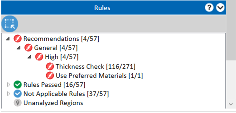
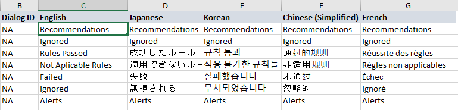
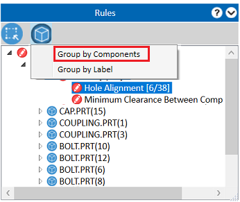
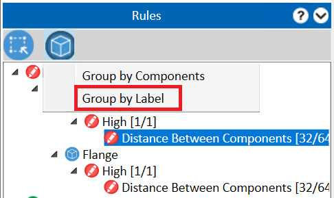
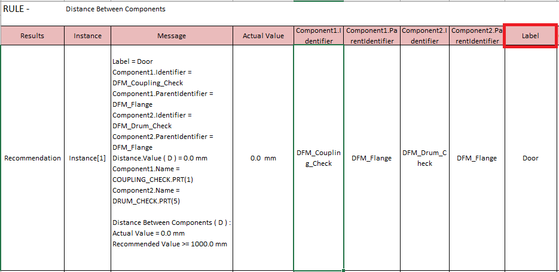
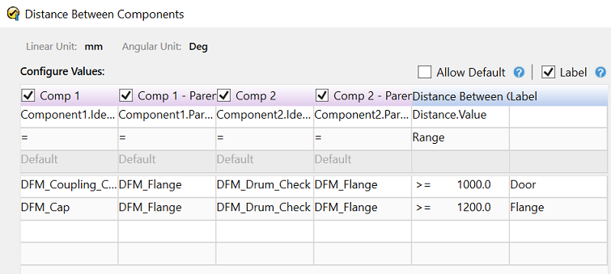
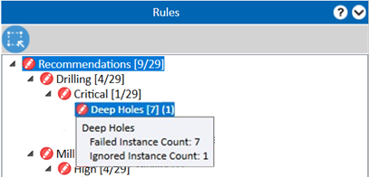

DFMPro の解析が完了すると、結果には以下の情報が表示されます。
違反したルールの数および詳細
合格したルールの数
指定された設計タイプに適用されないルールの数。ユーザーは、適用されない ルールモジュールを削除 することで、この情報を結果から除外できます。
DFMPro がパーツ全体を解析できたかどうか。解析できなかった場合は、解析されていないパーツの領域が特定されます。
違反したルールの詳細:
ルールモジュール
ルール名
ルールに違反しているインスタンスの数（失敗インスタンス）
各失敗インスタンスの問題点、およびグラフィックスエリア上でのその位置
解析が完了したら、DFX タブ内に表示されているすべての情報を確認するために、以下の手順に従うことができます。
ルール グループボックスには、推奨事項、合格したルール、適用外ルール、未解析領域の一覧が表示されます。

まだ展開されていない場合は、推奨事項 項目を展開して、違反したチェックの一覧を表示します。
特定のルールに対する失敗インスタンスの一覧から インスタンス 項目をクリックします。失敗インスタンスとは、通常、加工が困難なボディ上の形状、またはルールに違反している属性を指します。
インスタンス をクリックすると、インスタンス詳細グループボックスが表示され、期待条件と実際の条件を含め、この形状のどこに問題があるかといった具体的な情報が表示されます。
失敗インスタンス をクリックし、ズーム コマンドを選択すると、グラフィックスエリア内の該当形状にフォーカスします。DFMPro は、CAD ウィンドウ内の該当箇所にズームしながら、インスタンス グループボックス内で選択されたインスタンスをハイライト表示します。
同様の方法で、結果内に存在するすべての失敗インスタンスを順に確認できます。
ルール グループボックス配下の失敗インスタンスを表示するには、Ctrl キーを押しながら ルートノード または ルール をクリックします。
パーツが完全に解析されていない場合は、未解析領域が有効になります。未解析領域 ノードをクリックすると、ボディ上の未解析領域がハイライト表示されます。
ユーザーは 散布図結果ビュー を使用して、標準的な推奨事項から大きく逸脱している重要な失敗インスタンスを迅速に特定することもできます。
エラーを修正し、設計を再検証 します。
DFMPro では、以下のインストール先に共有されているテンプレート内の文字列を編集することで、DFMPro 結果ペイン に表示される文字列を変更できます。
C:\ProgramData\GeometricLtd\DFMPro\Wildfire\Settings\Lang\Common\DFMResourceData.xls
テンプレートで利用可能なデフォルト文字列:

例:
推奨事項 は ルール推奨事項 または 設計推奨事項 といった名称に変更できます。
グラフィカル フィルター コマンドは、表示されるダイアログボックスで指定された 領域ベース フィルター、面／エッジ エンティティ選択、 または フィーチャー選択 に基づいて、ルール推奨事項をフィルタリングします。
コンポーネントまたはラベルごとにルールをグループ化 コマンドは、違反ルールを含むアセンブリ内のコンポーネント一覧をフィルタリングします。アセンブリ内で特定の名前を持つコンポーネントを特定する際に有効です。
コンポーネント別にグループ化: コンポーネント名に基づいて結果を表示します。
ラベル別にグループ化: ラベルに基づいて結果を表示します。追加されたラベルは、生成される DFMPro レポートでも使用されます。



注記:
コンポーネント別にグループ化 コマンドは、Assembly、Welding、Sheet Metal、または Tubing ルールでのみ使用できます。
ラベル別にグループ化 コマンドは、Assembly ルール（例: コンポーネント間距離）でのみ使用できます。

無視されたインスタンスの詳細
インスタンスが無視された状態は、ルール名ノードに追加されます。以下の画像では、Deep Holes ルールにおいて (7) は失敗したインスタンスの総数を示し、(1) は無視されたインスタンスの数を示しています。
